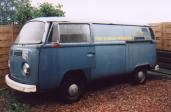
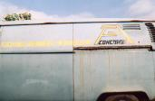
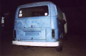
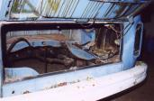
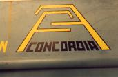
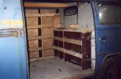
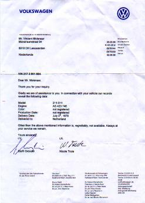
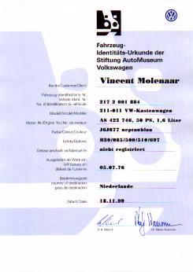

|  |  |  |  |
|  |  |
 |
In spring 1998 Peter Witkamp bought it. He had it parked beside his house. I said I liked the van but then he mentioned he was going to part it out. I thought that would be a waste. How many original panel vans are left with the original company writing still on it? Plus that this bus was in a very good condition. So I bought it and now it is waiting to be restored. I got all the parts to complete it, now I need the money for welding and bodywork.
To be continued...
|  |
VIN 217 2 001 884 Dear Mr. Molenaar, Thank you for your inquiry. Gladly we are of assistance to you. In connection with your vehicle our records reveal the following data:
Yours sincerely,
|
|  | |
Customer: | Vincent Molenaar |
Vehicle Ident. Nr.: | 217 2 001 884 |
Model: | 211-011 VW-Kastenwagen (deliveryvan) |
Engine No.: | AS 423 746 |
Colour: | J6J677 neptunblau (neptune blue) |
Extras: | B30/085/500/510/697 |
Built on: | nicht registriert (not registered) |
left factory on: | 05.07.76 |
Country of destination: | Niederlande (The Netherlands) |
Date: | 18.11.99 |
|
| ||||||||||||||||||||||||||||||||||||
|
Last update: January 25th, 2000 Copyright © 1997 Vincent Molenaar molenari@hotmail.com |
DISCLAIMER |
Vincenzo's Volkswagen Vans
|
{kind=link}
{kind=link}
{kind=link}
{kind=link}
{kind=link}
{kind=link}
{kind=link}
{kind=link}